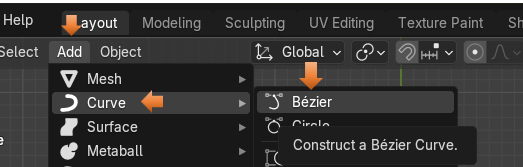
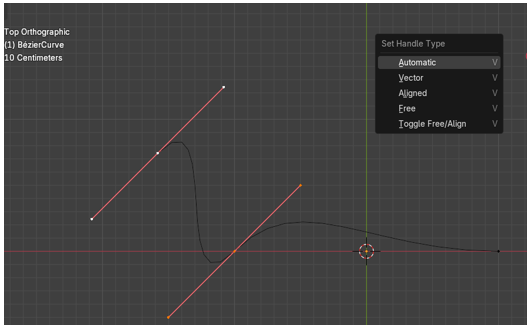
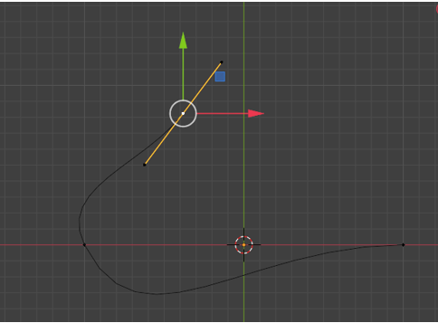
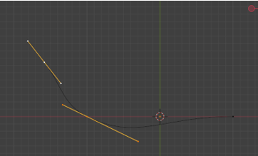
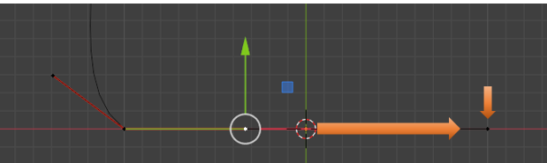

~2 Bezier Curves~
9/1/2025
The Difference Between the Automatic, and the Aligned Handles
What is a Bezier Curve?
A Bezier curve, is another one of those things, when messing with computers, that uses math to do its stuff. It might sound a little bit complex to get into, but this technique will use numbers to define a smooth curve in graphic programs like Blender.
These curves can then be further manipulated by using control points, and handles to reshape the curve into something that the graphic designer actually wants. These things will look like this.
How do I create Bezier Curve?
Like just about everything else in Blender, except for the cube, which is sitting there when you first open the program up. You are going to have to add the Bezier Curve, through the Add menu in Object mode.
You will see the menu to access Curve sitting just under Mesh in the Add dropdown.

You do have access to other types of curves through the Curve Menu, but for a few tutorials, we will be focusing on the Bezier curve. This is the type of curve, which is most commonly used by Graphic Designers and 3D modelers to create their wavy masterpieces.

When you first bring this curve into Object mode, you will see that it looks like this. This is looking down on the curve from top view. From front view you really won’t see much then just a straight line lying on the floor of the grid.
It isn’t until you bring it into Edit mode that you see the inner workings of the curve, with its control points and handles. The illustration below shows one end of the curve, with the mechanism which is used to control it.
You can tug on one of the control points at the end of the handle and move it with the move tool in edit mode. Using these handles, is how we can transform the given curve into something that we actually are trying to create.
The Different Handle Types
Notice that the handles which we see on this Bezier tool is in red. Well, there are actually different types of Bezier handles, which we can use.
We can get to these different types, by selecting the Bezier Curve in Edit Mode, and hitting the V key on the Keyboard.
By default, we are given the Aligned Handle type.
Extrude Another Segment
This may have been the tiny curve that we are given, but we are designers, and as such, we want so much more.
We can add to this Curve segment by selecting the mid -point on it. We do not want the end points on the handle, or this extruding thing just won’t work right.
First of all, in order to do this, we need to change over to the Move tool. All of this extruding is done. from this one tool here.
Now you can select one of the mid-points on the Bezier Curve
Now go to the top of the Menu to Control Points-Extrude Curve and Move. Notice how Move was included in this menu option, so we will be able to move while creating this new segment. You can also hit the E key for method, and it will also put you inside of this Extrude Curve and Move option.
The Tool Panel
When you come into the Edit Workspace with a curve, instead of a mesh object. There is something else you may notice. And this is that the tool box on the left side of the page looks quite a bit different. This is because the tools that we use for the curve is different than what we use for a mesh object, and it is also another reason that, in our last article that in order to draw a curve, we needed to first bring a Bezier curve into the Edit work space, before throwing it away, and using the draw tool.

The Difference Between the Automatic, and the Aligned Handles
As I mentioned above, we have a choice between what type of handle that we use on our Bezier Curve. We automatically get the red handles which gives us an aligned version of these handles. But if we click on the V hot key to change these handles, we can get the automatic handles. What the automatic type of handles will do is to take a messy curve that we created and try to smooth it out the best that it can.
Before doing that, we need to first select these two handles, if you extruded with the E key, you should have this top red line with the 3 control points on it.
Now you hit the V Key with those 2 handles selected.

When we Hit the Automatic option from the Set Handle Type menu, we will immediately see a much smoother looking curve with yellow handles. So, Blender greatly smoothed out our curve, just by hitting the automatic button.
The one key feature of the Automatic option is that if you try to move one control point, the other down stream curves will move trying to keep that smooth looking curve intact. This may, or may not be what you want, but this is what automatic handles will do for you.

Also, when you are in Automatic Mode you can move the mid-point, and you will stay with these automatic yellow handles, but as soon as you start to move one or the other end points on the end of the handle, it will automatically throw you back into the Aligned handle mode and your handles will again turn red. So, be aware of this.
Here we were in Automatic handle mode, and changed the top handle by moving one of the points on the end of the stick. Notice that this handle was changed back to red. But the bottom one remained the yellow color because it was left untouched.
A handle can be either an active handle or a passive handle. You need to click on a point to start working it. But notice that when we click on an end point on one of the handles, we then get one side of it being yellow, and the other side turns a deeper color of the selected type of handle. This means that we selected and can now work with the yellow side. So, the yellow side is the active handle and the darker- color, side is the passive side.
Hit the V key on the keyboard, and select your two points and turn them both into Automatic for a second. Your handles should both now be yellow now.

The Vector Type Handle
To select our points for the Vector type of handle. First, we want to select this point here, in the center of the handle.

Now after clicking on that point, click on the point at the bottom of the handle. Both of these points need to be selected. Every element needs to be clicked on, or selected in order to be operated on. Do not hold down the shift key to select this second point. It will not work. Just select it. Notice that we now have an active section and a passive section. So, we will work with the yellow portion, because that is what is active.
Hit the V key to turn this section into a Vector Handle.
Now when you click that Vector button, you may immediately notice that this handle that is lying on the floor changes to have a rather sharp bend in it.
Vector is another way of now thinking of this as a straight line. Because, that is what we see from the handle on the floor that is on the right- a straight line. What this is doing is taking that last control point on the segment, and it is pointing it straight at the previous control point.

You will notice now if you go in, and select the handle on the floor and the handles above it, and move them both upward, that the curve in between them is preserved.
The reason that this curve is preserved is that we also need to come over to that first dot on the line and make the handle on the left of it, vector too.
Go back in history, to before you moved the point off of the floor.
Now select that last dot on our curve. Then select the mid- point on that control.
We actually want to select the end point on the handle, to the left of the mid-control point.
Now change that point to be Vector.
So, now when you select the two controls that we were working with, and move them upward, we can see that we now actually get our straight line.
Aligned
Move your vector curve back to rest on the floor again.
Now click on the end handle point, on the left for the control that is lying on the floor.
This time we want to choose the Aligned option for this left end point.
As you can see, it took that handle and flattened it too, to the floor.
So, what it did was to create a smooth flowing curve above this straight segment that we have lying on the ground. This Aligned handle, is a hot pink color.
Now take the mid-point on the vector handle lying on the floor.
If you move it upward, you will see it will keep the curve above it although it will get smaller because we did not select that top controller. But it will also keep the straight line on the right of it. That is because of the assignments, that we have made to these individual handles.
If you take this far left handle and try to move it anywhere it will keep that straight aligned relationship to the right of it. You will be unable to move this point up or down it will only move in a straight line. So, as its name implies, this point is aligned, or in line.
In order to lie this curve back down on the floor, you need to grab the mid-point again.
Free Handle Type Option
The next option in the type of handles that we are given is called Free. So, let’s select that control, at the top, to work with this Free type of handle.
Hit the Free option
Our handle colors will change again.
This Free option can be thought of like a corner point, if you want to think about it in the Pen tool, kind of way, that we get from Adobe applications.
Select the handle to the right of the mid-point of this free tool, and move it, and you will see that this controller forms a corner point.
The Free form method can also mimic the other types of handles. When we click off those top handles and click on something else, you will notice that the curve itself underneath, hasn’t also become a sharp corner. Our curve is still quite smooth.
Free, will change how the curve looks, but it will still be a curve, and if you don’t move any parts of the controller at all, and simply click on the free option. You will notice there is no change to the curve at all, whereas when you clicked on other options for the handles, you immediately saw a change to what you were looking at on the screen.

Well, that is quite enough to take in for this week. Next week, we will be taking everything that we learned here and start modifying it into a more complex form.